低温調理肉会 2020 1月の陣
低温調理肉会 2020 1月の陣
約1年半ぶりくらいに肉会をやってきました。基本的には自分が肉を低温調理したり、肉を焼きたい、という欲望をかなえるために開催しているのですが、前回まではbuildersconのマーケティングをついでに行う目的でしたいところを今回は単独開催（？）してきました。
単独開催（？）というわけでこれまでは基本的に builderscon 関係者を中心にあつまっていたのを変更して自分の仕事関係の人も交えた会となりました！
ルールは
- 主宰は肉と会場のみを提供する（余裕があればビール等も）
- 野菜を食べたいとか炭水化物が欲しい、とかは自分で持ってくる
以上！
ちなみに以前やってたBBQを含めてこういう企画をし始めて5年くらいたつのですがもう最近は子供も「またお肉焼くんだね！」とわかっていてちょっとおもしろかった
会場はいいところをみつけてもすぐ閉店していたりして毎回さすらっているのですが、今回の会場は外苑前の「まかでき食堂」さん。キッチンからホールが見渡せて非常にやりやすい会場でした。
自分の通常の活動範囲内にないので食事はしたことないんだけど、会場としては30人くらいまでの集まりだったかなりおすすめ！
当日は朝からタクシーを呼んで役10kgの肉を持って移動です。毎回思うんだけど、タクシーの運転手さんも家族連れなのに明らかに食材が入ってそうな箱、anova、バケツ等を持った客を怪しんでいるのではないかなぁｗ 行き先もBBQ会場とかじゃなくて外苑前だし。
まずは定番の牛肉。こちらはアメリカ産リブロースです。55.5度で約40分やってからやきました。
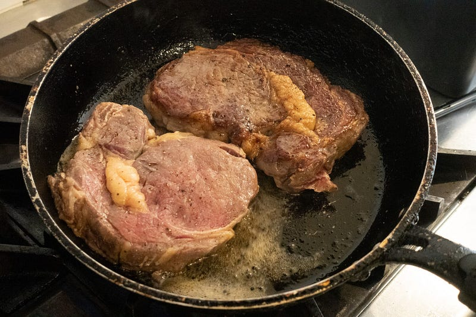
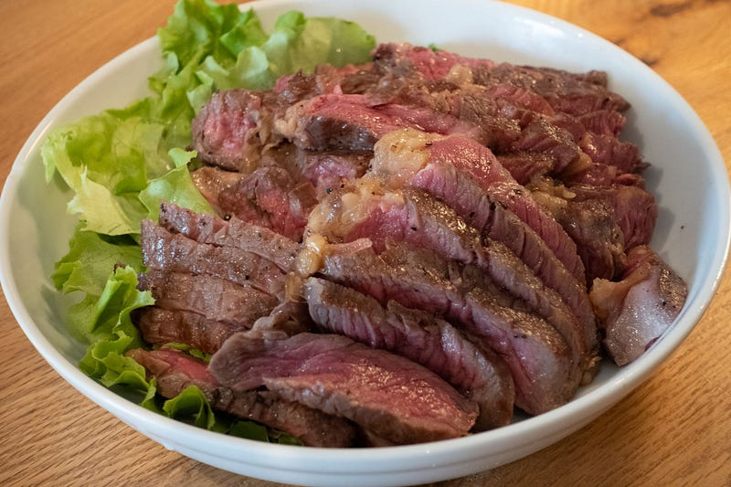
塊肉は前日にトリミングしておいた。リブロースだけどわりと脂身少なめ。ブロックで1.6kgくらいのを二つ買って、ステーキ9枚取れました。
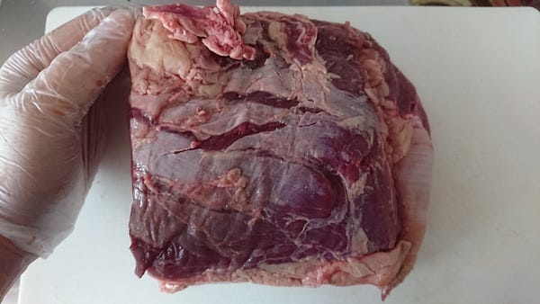
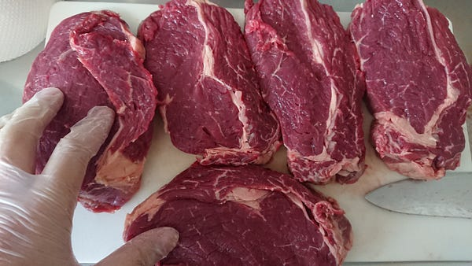
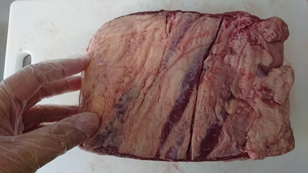
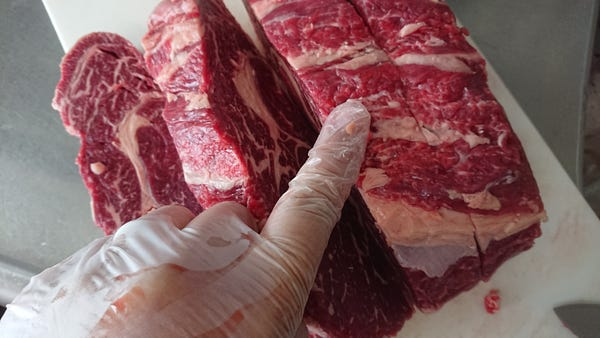
ラムチョップもこの会の定番。今回はフルラック2つぶん。
もう本当に何回もanovaでやってるのでこちらも手慣れた物。最適温度は塊のままやって56.5度、3時間〜4時間。焼く前にバラして両面軽く焼くのが最高。
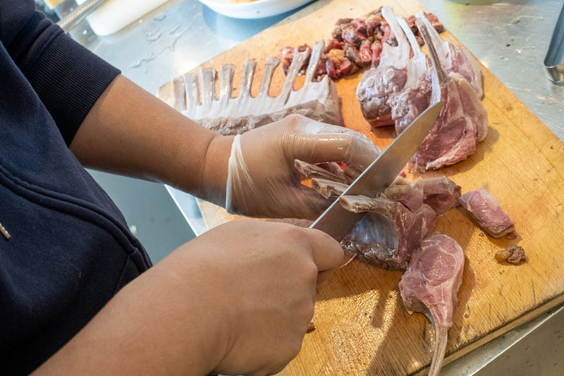
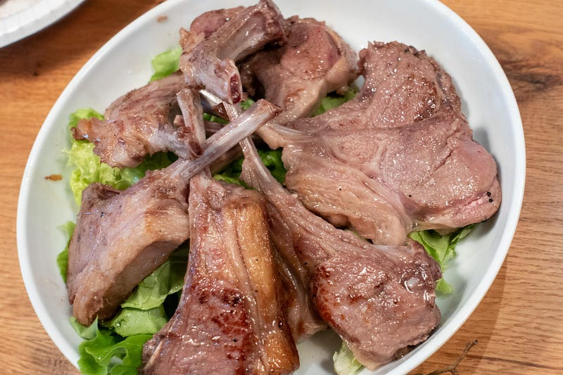
ラムチョップはありがたいことにそれまでラム肉はにおいが苦手で…という方が僕の肉会で食べたラムチョップがおいしくて改宗した、というエピソードもあるくらい皆さんが楽しみにしてくれているヤツです。
今回もおいしくできたと思う。
そいえばこの間くらいに有志によりポテトのラクレットがけが提供されていた。
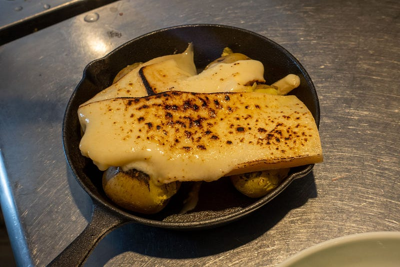
やたらとうまいポテトだった、とあとから聞いたらすごい評判よかったのだが、さすがにラクレット2.3kgは買いすぎなのでは…ｗ （残りの半分約1kgは持って帰って家族でおいしく少しずつ食べております）
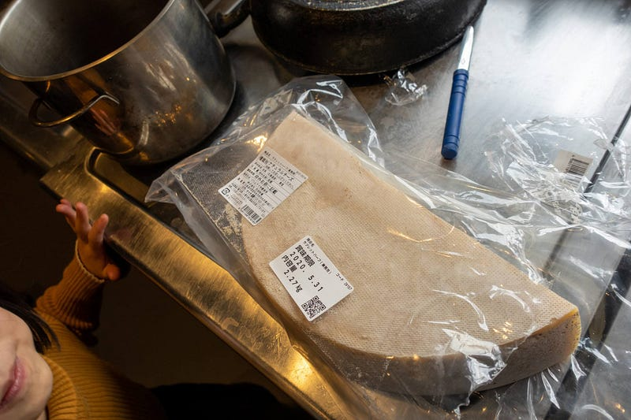
豚肉だけはハナマサでロースのブロック2kgを買ってきました。56.5℃で2時間です。
ちょっと写真だとわかりにくいけど、これは生姜焼きになってます。前作った時のレシピとほぼ一緒。
このところOxygen Not Includedというゲームにかまけてて料理ブログを一切更新していなかったが、今日は久しぶりにハナマサで豚ロース肉の塊を買ったので、ポークジンジャーを作る事にする。medium.com
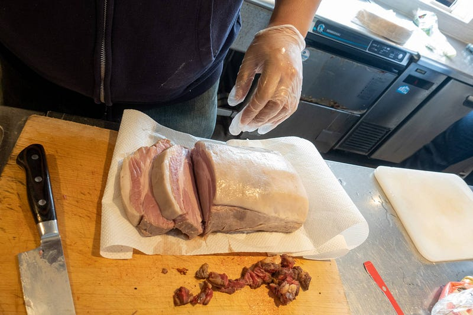
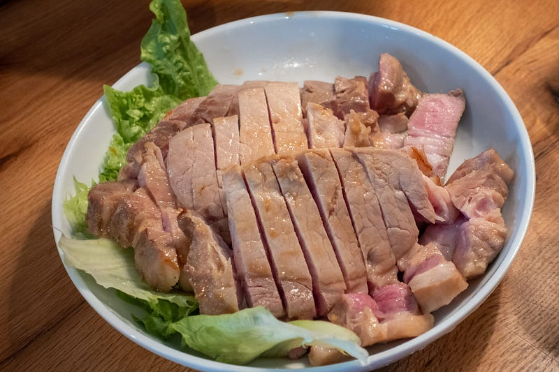
いつも言っているけど、豚肉は低温調理のしがいがある肉です。普通に調理したのと全く違う食感が得られてすばらしい。
これもこの会ではド定番の鴨胸肉300gを4つ。鴨は55.5℃で3時間。
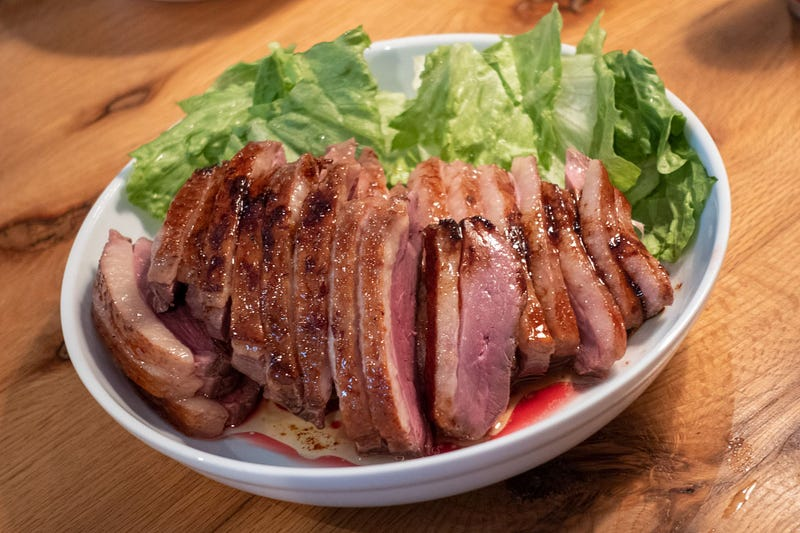
鴨ももう何回もやっていて、2017年にやった時（以下のリンク）なんかはまだ低温調理が怖くて58℃とかでやってたんだけど、じょじょにコツを覚えていき、「これは牛ステーキと同じ温度だな」というところにおちつきました。
完全にうまいです。
こちらはもうひとつ羊肉。同じ羊でもこちらはラム肩1.2kgです。より筋が多くて、気をつけないとガチガチの固い肉になっちゃうんだけど、これは56.5℃で8時間やりました。
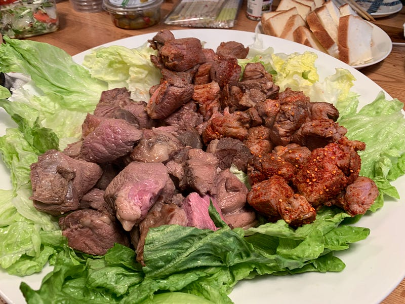
今回は参加者の方が調味料の「羊名人」を持ってきてくれたのだけど、こいつはラム肩にあってて、すごいおいしかった。おすすめ！上の写真の赤い調味料がかかってるやつです。
「羊名人」を買った！もらった！でもどう使おう？ そんなあなたのために、80Cでは「羊名人」のおいしくたのしい使い方をご紹介。ご家庭でも充実の羊齧ライフをお楽しみください。…80c.jp
ちなみにこちらも加熱前にがっつりトリミングしておいた。やはりまわりの皮というか脂はちょっと固い。
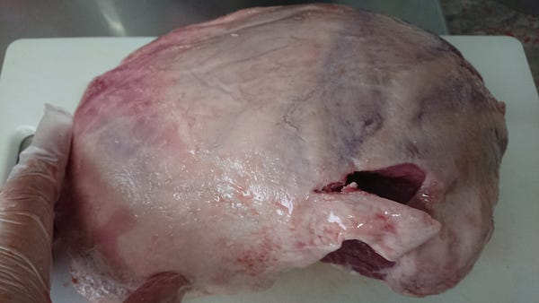
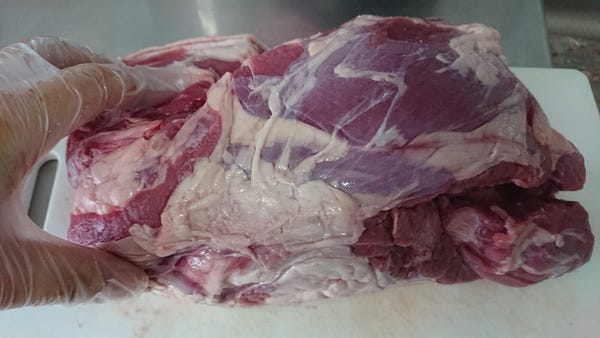
今回は妻が珍しく「私もなんかもっていこう」ということでブラジルプリンを作ってくれた。以前から僕が褒めまくっている完全体ブラジルプリン。
やりました。妻が完璧、完全なPudim de Leite（ブラジルプリン）を作ってくれました。プリンの高さも充分あり、ついに至高の作品ができあがりました。なんちゃってブラジル人の私も大満足です！medium.com
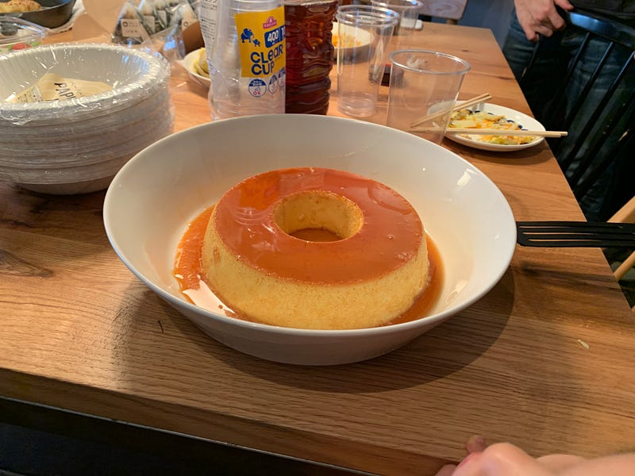
もっていく時からわかっていたけど瞬殺だった。子供達だけには大きめの塊をとってあげ、残りは大人がうばいあった。脂ぎっしゅな肉料理を食べたあとって、きついくらいの甘さのスイーツが合うんだよね…
今回はあまりこういう企画に来ない人も交えていたので肉のチョイスは無難にまとめたのですが、次回やるときはまたもう少し冒険した何かをチョイスしてもいいかな、という感じでしたね。しかしあまり変わった肉を持ってきてもみんな食べられるわけじゃないしねぇ。
というわけで皆さん来てくれてありがとうございました！ニーズがあればまたやりたいと思いますので、乞うご期待。
ところで今回もやはり少し（2kgほど）肉があまってしまったので持って帰りました。あまった肉は鴨肉、羊肉、豚肉だったのですが、こちらも例年通り持ち帰って強いミートソースに仕立て上げて冷凍しました。
この間低温調理肉会というのをやったのだが、その際肉が余った。目算で合計約3kgの牛ロースと、ラムショルダーだ。肉があまってしまったら煮込む、というのはセオリーが決まっている。うちの場合はミートソースにして冷凍してしまう。medium.com
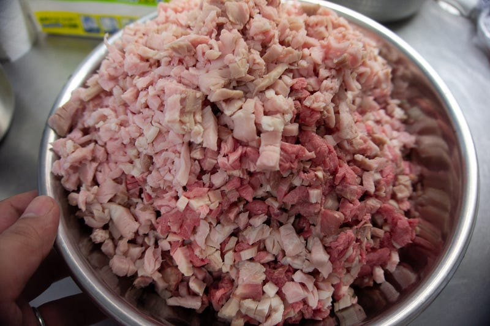
鴨肉、羊肉、豚肉を容赦なく包丁で細切れにします。ミンサーほしいけど、まずは大きな家がないと無理だ… ちなみにこの前によく切れる包丁を買ったのでそれほど辛い作業ではなかった。
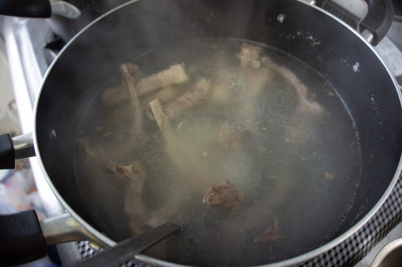
ラムチョップの骨からは出汁をとっておきます。
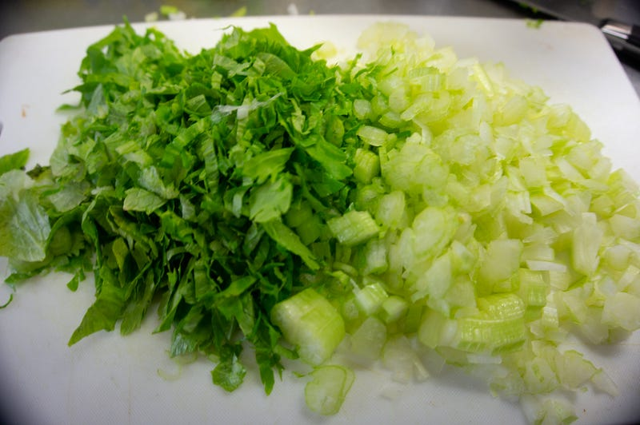
肉会に持ってきてもらったセロリ、会では使えなかったのでこちらで…
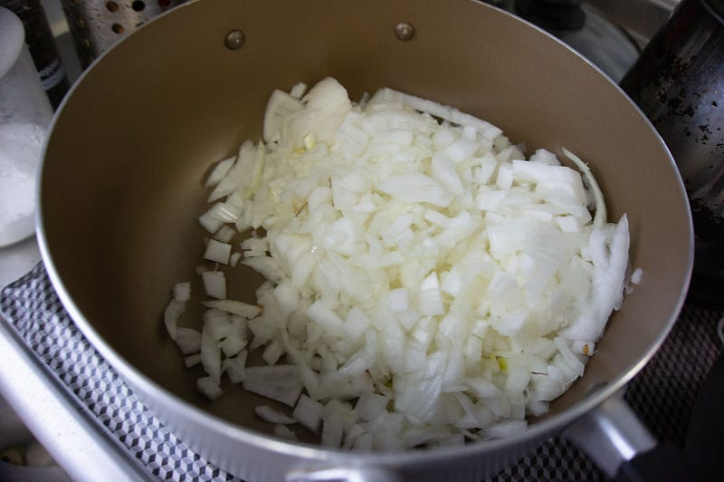
たまねぎ。普段はにんじんもいれるんだけど、今回は肉の量も結構あったのでパスした。
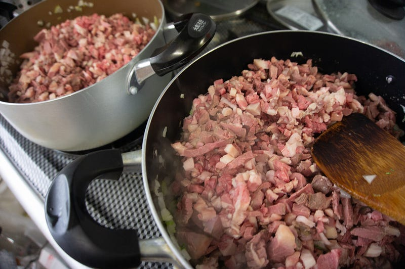
煮て、大量のラードを取り除いて、トマト缶4本入れて、塩胡椒、クミン等で味を決めてできあがり。
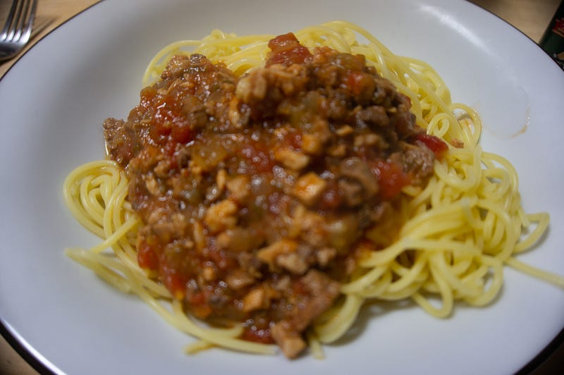
肉の匂いがしっかりするミートソース。なんの肉を食べてるのかわからないレトルトみたいなのとは違うぜ！ 今うちに来るともれなくこのミートソースが食べられますｗ